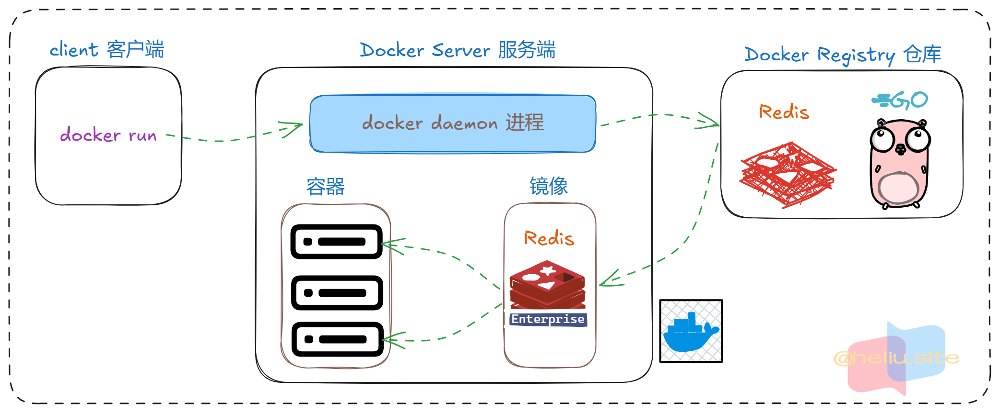
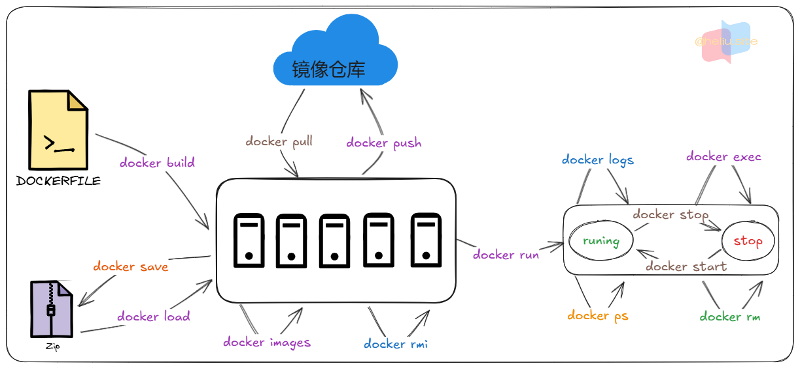

- 仓库（repository）：docker仓库是用来保存镜像的地方。镜像构建完成后，可以直接在当前宿主机上运行，但是但是如果需要在其他服务器上使用这个镜像，就需要一个集中存储、分发镜像的服务，docker仓库就是这样的一个服务。
- 镜像（image）：保存了应用和需要的依赖环境，比如运行的runtime和webapp等。
- 容器（Container）：镜像的实例。一个容器代表一个正在运行的应用程序、进程或服务。
- Docker官方提供了一个专门管理、存储镜像的网站，并对外开放了镜像上传、下载的权利。https://hub.docker.com/

快速入门#
- Docker 快速的安装了 mysql。
- docker run -d ：创建并运行一个容器，-d 则是让容器以后台进程运行。
- –name mysql : 给容器起个名字叫mysql，可以是其他名称。
- -p 3306:3306 : 设置端口映射。
- 容器是隔离环境，外界不可访问。但是可以将宿主机端口映射容器内到端口，当访问宿主机指定端口时，就是在访问容器内的端口了。
- 容器内端口往往是由容器内的进程决定，例如MySQL进程默认端口是3306，因此容器内端口一定是3306；而宿主机端口则可以任意指定，一般与容器内保持一致。
- 格式： -p 宿主机端口:容器内端口，示例中就是将宿主机的3306映射到容器内的3306端口。
- -e TZ=Asia/Shanghai : 配置容器内进程运行时的一些参数。
- 格式：-e KEY=VALUE，KEY和VALUE都由容器内进程决定。
- 案例中，TZ=Asia/Shanghai是设置时区；MYSQL_ROOT_PASSWORD=123是设置MySQL默认密码。
- mysql : 设置镜像名称，Docker 会根据这个名字搜索并下载镜像。
- 格式：REPOSITORY:TAG，例如 mysql:8.0，其中 REPOSITORY 可以理解为镜像名，TAG 是版本号。
- 在未指定TAG的情况下，默认是最新版本，也就是 mysql:latest。
1
2
3
4
5
6
|
$ docker run -d \
--name mysql \
-p 3306:3306 \
-e TZ=Asia/Shanghai \
-e MYSQL_ROOT_PASSWORD=123 \
mysql
|
docker 基础#
常见命令#

- 默认情况下，每次重启虚拟机我们都需要手动启动Docker和Docker中的容器。通过命令可以实现开机自启：
1
2
3
4
5
|
# Docker开机自启
systemctl enable docker
# Docker容器开机自启
docker update --restart=always [容器名/容器id]
|
使用示例#
1
2
3
4
5
6
7
8
9
10
11
12
13
14
15
16
17
18
19
20
21
22
23
24
25
26
27
28
29
30
31
32
33
34
35
36
37
38
39
40
41
42
43
44
45
46
|
# 第1步，去DockerHub查看nginx镜像仓库及相关信息
# 第2步，拉取Nginx镜像
docker pull nginx
# 第3步，查看镜像
docker images
# 结果如下：
REPOSITORY TAG IMAGE ID CREATED SIZE
nginx latest 605c77e624dd 16 months ago 141MB
mysql latest 3218b38490ce 17 months ago 516MB
# 第4步，创建并允许Nginx容器
docker run -d --name nginx -p 80:80 nginx
# 第5步，查看运行中容器
docker ps
# 也可以加格式化方式访问，格式会更加清爽
docker ps --format "table {{.ID}}\t{{.Image}}\t{{.Ports}}\t{{.Status}}\t{{.Names}}"
# 第6步，访问网页，地址：http://虚拟机地址
# 第7步，停止容器
docker stop nginx
# 第8步，查看所有容器
docker ps -a --format "table {{.ID}}\t{{.Image}}\t{{.Ports}}\t{{.Status}}\t{{.Names}}"
# 第9步，再次启动nginx容器
docker start nginx
# 第10步，再次查看容器
docker ps --format "table {{.ID}}\t{{.Image}}\t{{.Ports}}\t{{.Status}}\t{{.Names}}"
# 第11步，查看容器详细信息
docker inspect nginx
# 第12步，进入容器,查看容器内目录
docker exec -it nginx bash
# 或者，可以进入MySQL
docker exec -it mysql mysql -uroot -p
# 第13步，删除容器
docker rm nginx
# 发现无法删除，因为容器运行中，强制删除容器
docker rm -f nginx
|
命名别名#
- 给常用Docker命令起别名，方便我们访问。
1
2
3
4
5
6
7
8
9
10
11
12
13
14
15
16
17
18
19
20
|
# 修改/root/.bashrc文件
vi /root/.bashrc
内容如下：
# .bashrc
# User specific aliases and functions
alias rm='rm -i'
alias cp='cp -i'
alias mv='mv -i'
alias dps='docker ps --format "table {{.ID}}\t{{.Image}}\t{{.Ports}}\t{{.Status}}\t{{.Names}}"'
alias dis='docker images'
# Source global definitions
if [ -f /etc/bashrc ]; then
. /etc/bashrc
fi
# 执行命令使别名生效
source /root/.bashrc
|
数据卷#
容器是隔离环境，容器内程序的文件、配置、运行时产生的容器都在容器内部，我们要读写容器内的文件非常不方便。
- 数据卷（volume）是一个虚拟目录，是容器内目录与宿主机目录之间映射的桥梁。
- 数据卷（volume）是一个虚拟目录，是容器内目录与宿主机目录之间映射的桥梁。
- html：放置一些静态资源
- conf：放置配置文件
- 如果我们要让Nginx代理我们的静态资源，最好是放到html目录；如果我们要修改Nginx的配置，最好是找到conf下的nginx.conf文件。
- 但遗憾的是，容器运行的Nginx所有的文件都在容器内部。所以我们必须利用数据卷将两个目录与宿主机目录关联，方便我们操作。
常见命令#
注意：容器与数据卷的挂载要在创建容器时配置，对于创建好的容器，是不能设置数据卷的。而且创建容器的过程中，数据卷会自动创建。
1
2
3
4
5
6
7
8
9
10
11
12
13
14
15
16
17
18
19
20
21
22
23
24
25
26
27
28
29
30
31
32
33
34
35
36
37
38
39
40
|
# 1.首先创建容器并指定数据卷，注意通过 -v 参数来指定数据卷
docker run -d --name nginx -p 80:80 -v html:/usr/share/nginx/html nginx
# 2.然后查看数据卷
docker volume ls
# 结果
DRIVER VOLUME NAME
local 29524ff09715d3688eae3f99803a2796558dbd00ca584a25a4bbc193ca82459f
local html
# 3.查看数据卷详情
docker volume inspect html
# 结果
[
{
"CreatedAt": "2024-05-17T19:57:08+08:00",
"Driver": "local",
"Labels": null,
"Mountpoint": "/var/lib/docker/volumes/html/_data",
"Name": "html",
"Options": null,
"Scope": "local"
}
]
# 4.查看/var/lib/docker/volumes/html/_data目录
ll /var/lib/docker/volumes/html/_data
# 可以看到与nginx的html目录内容一样，结果如下：
总用量 8
-rw-r--r--. 1 root root 497 12月 28 2021 50x.html
-rw-r--r--. 1 root root 615 12月 28 2021 index.html
# 5.进入该目录，并随意修改index.html内容
cd /var/lib/docker/volumes/html/_data
vi index.html
# 6.打开页面，查看效果
# 7.进入容器内部，查看/usr/share/nginx/html目录内的文件是否变化
docker exec -it nginx bash
|
挂载目录或文件#
- 可以发现，数据卷的目录结构较深，如果我们去操作数据卷目录会不太方便。在很多情况下，我们会直接将容器目录与宿主机指定目录挂载。挂载语法与数据卷类似：
1
2
3
4
|
# 挂载本地目录
-v 本地目录:容器内目录
# 挂载本地文件
-v 本地文件:容器内文件
|
注意：本地目录或文件必须以 / 或 ./开头，如果直接以名字开头，会被识别为数据卷名而非本地目录名。
- 例如：
1
2
|
-v mysql:/var/lib/mysql # 会被识别为一个数据卷叫mysql，运行时会自动创建这个数据卷
-v ./mysql:/var/lib/mysql # 会被识别为当前目录下的mysql目录，运行时如果不存在会创建目录
|
Dockerfile#
- 这种记录镜像结构的文件就称为Dockerfile，其对应的语法可以参考官方文档：https://docs.docker.com/engine/reference/builder/
| 命令 |
说明 |
示例 |
| FROM |
指定基础镜像 |
FROM centos:6 |
| ENV |
设置环境变量，可在后面指令使用 |
ENV key value |
| COPY |
拷贝本地文件到镜像的指定目录 |
COPY ./xx.jar /tmp/app.jar |
| RUN |
执行Linux的shell命令，一般是安装过程的命令 |
RUN yum install gcc |
| EXPOSE |
指定容器运行时监听的端口，是给镜像使用者看的 |
EXPOSE 8080 |
| ENTRYPOINT |
镜像中应用的启动命令，容器运行时调用 |
ENTRYPOINT java -jar xx.jar |
1
2
3
4
5
6
7
8
9
10
11
12
13
14
15
16
17
18
19
20
21
22
23
24
25
26
27
28
29
30
31
32
33
|
FROM golang:1.22-alpine AS builder
LABEL stage=gobuilder
ENV CGO_ENABLED 0
ENV GOPROXY https://goproxy.cn,direct
RUN sed -i 's/dl-cdn.alpinelinux.org/mirrors.aliyun.com/g' /etc/apk/repositories
RUN apk update --no-cache && apk add --no-cache tzdata
WORKDIR /build
ADD go.mod .
ADD go.sum .
RUN go mod download
COPY . .
COPY greet/api/etc /app/etc
RUN go build -ldflags="-s -w" -o /app/greet-api greet/api/greet.go
FROM scratch
COPY --from=builder /etc/ssl/certs/ca-certificates.crt /etc/ssl/certs/ca-certificates.crt
COPY --from=builder /usr/share/zoneinfo/Asia/Shanghai /usr/share/zoneinfo/Asia/Shanghai
ENV TZ Asia/Shanghai
WORKDIR /app
COPY --from=builder /app/greet-api /app/greet-api
COPY --from=builder /app/etc /app/etc
EXPOSE 8888
CMD ["./greet-api", "-f", "etc/greet.yaml"]
|
构建镜像#
- 当Dockerfile文件写好以后，就可以利用命令来构建镜像了。
- docker build : 就是构建一个docker镜像。
- -t docker-demo:1.0 ：-t参数是指定镜像的名称（repository和tag）。
- . : 最后的点是指构建时Dockerfile所在路径，由于我们进入了demo目录，所以指定的是.代表当前目录，也可以直接指定Dockerfile目录：
1
2
|
# 直接指定Dockerfile目录
docker build -t docker-demo:1.0 /root/demo
|
1
2
3
4
5
6
7
8
9
10
11
12
13
14
15
16
17
18
19
20
21
22
23
24
25
26
27
28
29
30
31
32
33
34
35
|
# 1.首先通过命令创建一个网络
docker network create hmall
# 2.然后查看网络
docker network ls
# 结果：
NETWORK ID NAME DRIVER SCOPE
639bc44d0a87 bridge bridge local
403f16ec62a2 hmall bridge local
0dc0f72a0fbb host host local
cd8d3e8df47b none null local
# 其中，除了hmall以外，其它都是默认的网络
# 3.让dd和mysql都加入该网络，注意，在加入网络时可以通过--alias给容器起别名
# 这样该网络内的其它容器可以用别名互相访问！
# 3.1.mysql容器，指定别名为db，另外每一个容器都有一个别名是容器名
docker network connect hmall mysql --alias db
# 3.2.db容器，也就是我们的java项目
docker network connect hmall dd
# 4.进入dd容器，尝试利用别名访问db
# 4.1.进入容器
docker exec -it dd bash
# 4.2.用db别名访问
ping db
# 结果
PING db (172.18.0.2) 56(84) bytes of data.
64 bytes from mysql.hmall (172.18.0.2): icmp_seq=1 ttl=64 time=0.070 ms
64 bytes from mysql.hmall (172.18.0.2): icmp_seq=2 ttl=64 time=0.056 ms
# 4.3.用容器名访问
ping mysql
# 结果：
PING mysql (172.18.0.2) 56(84) bytes of data.
64 bytes from mysql.hmall (172.18.0.2): icmp_seq=1 ttl=64 time=0.044 ms
64 bytes from mysql.hmall (172.18.0.2): icmp_seq=2 ttl=64 time=0.054 ms
|
- https://b11et3un53m.feishu.cn/wiki/MWQIw4Zvhil0I5ktPHwcoqZdnec